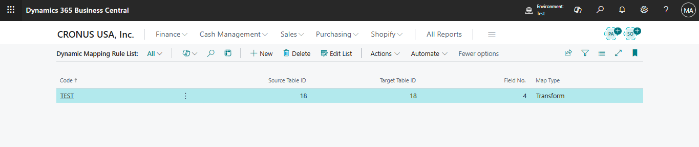
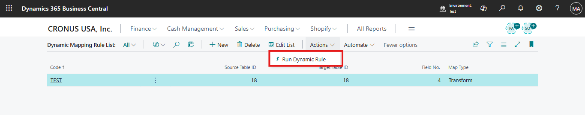
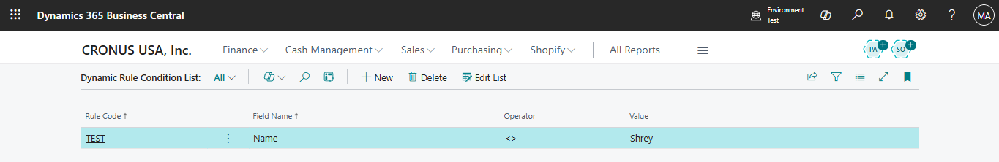
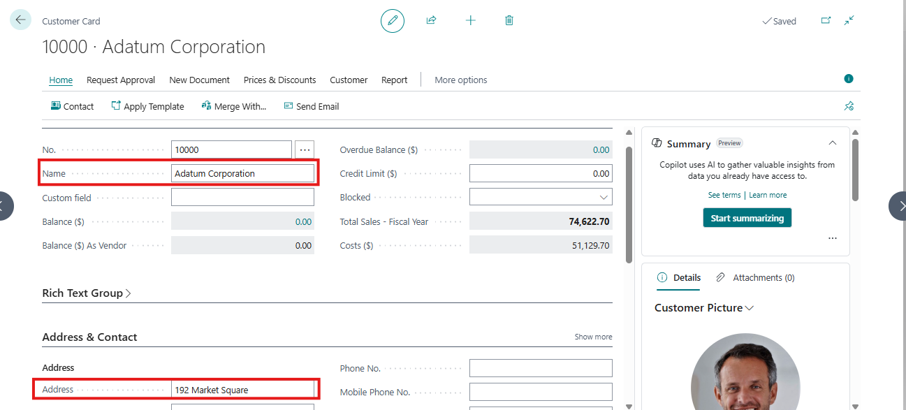
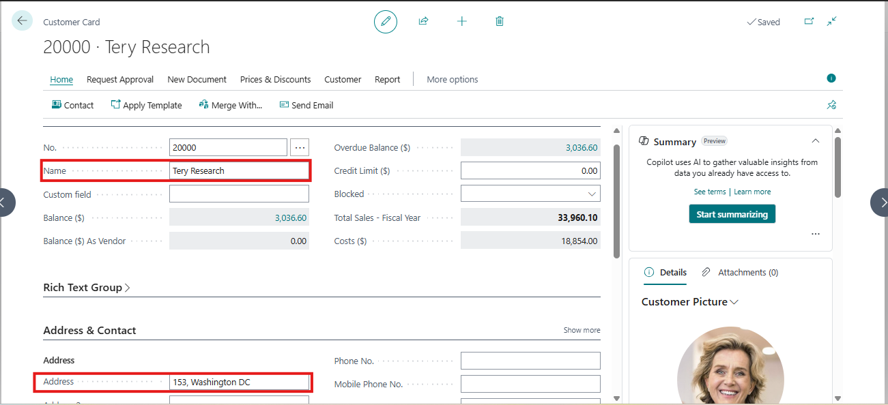
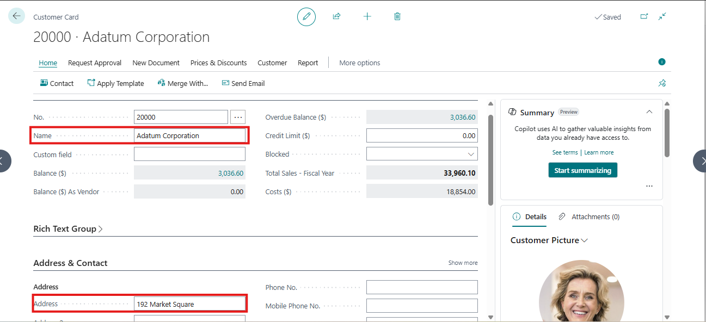

🚀 Mastering RecordRef & FieldRef in Business Central: Dynamic Data Extraction and Updates
In Business Central, most developers work directly with typed records like Customer or Vendor. But when you need dynamic, generic operations—copying data, mapping fields, applying transformations, or skipping primary keys—you need Record References (RecordRef) and Field References (FieldRef).
This blog walks through a dynamic mapping and validation framework that leverages RecordRef and FieldRef to:
- Extract field values dynamically
- Skip primary keys while updating records
- Apply transformations and rule-based validations
- Compare old vs new records
⭐ 1. What Are RecordRef and FieldRef?
- RecordRef: A generic pointer to any table at runtime.
It allows you to write code that works with any table instead of hardcoding types. - FieldRef: A pointer to a specific field inside a RecordRef.
You can read, write, or evaluate field values without knowing the field name or number at compile time.
These two objects make your AL code dynamic, reusable, and extensible.
⭐ 2. Dynamic Mapping Rules
All mapping rules are stored in a table (Dynamic Mapping Rule) instead of hardcoding:
Field | Purpose |
Source Table | Record to copy data from |
Target Table | Record to copy data to |
Field No. | Field number for mapping |
Map Type | Copy directly or apply transformation |
field(1; "Source Table ID"; Integer) { }
field(2; "Target Table ID"; Integer) { }
field(3; "Field No."; Integer) { }
field(4; "Map Type"; Option "Copy", "Transform") { }
field(5; "Transform Codeunit ID"; Integer) { }
The framework dynamically reads these rules and performs field-by-field mapping using RecordRef & FieldRef.
⭐ 3. Updating Records While Skipping Primary Keys
One common requirement: update fields of a record without touching its primary key.
With RecordRef and FieldRef:
procedure UpdateRecordExceptPrimaryKey(var SourceRec: Record Customer; var TargetRec: Record Customer)
var
RecRef: RecordRef;
SourceRef: RecordRef;
KeyRef: KeyRef;
F: FieldRef;
SourceF: FieldRef;
i, j: Integer;
IsPK: Boolean;
begin
RecRef.GetTable(TargetRec);
SourceRef.GetTable(SourceRec);
KeyRef := RecRef.KeyIndex(1); // Primary Key
for i := 1 to RecRef.FieldCount do begin
F := RecRef.FieldIndex(i);
IsPK := false;
// Check if field is part of PK
for j := 1 to KeyRef.FieldCount do
if KeyRef.FieldIndex(j).Number = F.Number then
IsPK := true;
if IsPK then
continue; // Skip PK
SourceF := SourceRef.Field(F.Number);
F.Value := SourceF.Value; // Copy value dynamically
end;
RecRef.SetTable(TargetRec);
RecRef.Modify(true);
end;
Why this works:
- Field iteration: No need to know field names at compile time.
- PK skipping: Ensures identity fields remain intact.
- Dynamic update: Works for any table or field type.
⭐ 4. Rule Validation Using FieldRef
We also validate data dynamically without hardcoding:
procedure ValidateRecord(var SourceRec: Record Customer; var TargetRec: Record Customer; RuleCode: Code[20]; RuleCond: Record "Dynamic Rule Condition")
var
Ref: RecordRef;
F: FieldRef;
begin
Ref := TargetRec;
RuleCond.SetRange("Rule Code", RuleCode);
if RuleCond.FindFirst() then
repeat
F := undefined;
for i := 1 to Ref.FieldCount do
if Ref.Field(i).Name = RuleCond."Field Name" then
F := Ref.Field(i);
if F = undefined then
Error('Field %1 not found in table', RuleCond."Field Name");
if not EvaluateCondition(F.Value, RuleCond."Operator", RuleCond.Value) then
Error('Rule %1 failed on field %2', RuleCode, RuleCond."Field Name");
until RuleCond.Next() = 0;
UpdateRecordExceptPrimaryKey(SourceRec, TargetRec);
end;
Dynamic field lookup: Works even if fields are renamed or tables change.
Safe updates: Only editable fields are updated, PKs remain intact.
⭐ 5. Comparing Records Dynamically
Using RecordRef and FieldRef, we can compare any two records field by field:
procedure CompareRecords(OldRec: Record Customer; NewRec: Record Customer; var Differences: Dictionary of [Text, Text])
var
OldRef, NewRef: RecordRef;
FOld, FNew: FieldRef;
begin
OldRef := OldRec;
NewRef := NewRec;
for i := 1 to OldRef.FieldCount do begin
FOld := OldRef.FieldIndex(i);
FNew := NewRef.FieldIndex(i);
if Format(FOld.Value) <> Format(FNew.Value) then
Differences.Add(FOld.Name, StrSubstNo('%1 → %2', FOld.Value, FNew.Value));
end;
end;
This is extremely useful for auditing or tracking dynamic changes.
⭐ 6. Key Benefits of This Approach
Benefit | Description |
Dynamic | Works for any table and fields without hardcoding |
PK-safe updates | Avoids accidental primary key changes |
Extensible | Add transform codeunits like Uppercase, Trim, or Custom Logic |
Rule-driven | Apply business rules without touching AL code |
Audit-ready | Compare old and new values dynamically |
⭐ 7. Real-Life Scenarios
- Copy Customer → Vendor dynamically
- Sync Sales Line → Purchase Line while skipping identity fields
- Apply conditional transformations on master data imports
- Build automated data governance frameworks
🎯 Conclusion
RecordRef and FieldRef are the backbone of any dynamic, reusable AL code.
By using them, we can:
- Extract field values dynamically
- Skip primary keys during updates
- Validate rules on the fly
- Apply transformations and filters
- Compare records for auditing
This framework is now ready for production and demonstrates the power of RecordRef & FieldRef in solving real-world BC challenges.


1️⃣ Dynamic Mapping Rule List
- Screenshot 1: Shows the Dynamic Mapping Rule List.
- Purpose: Defines the rules for mapping data between tables.
- Key fields:
- Code: Unique identifier for the rule.
- Source Table ID / Target Table ID: Tables involved in mapping.
- Field No.: Specific field number to map or transform.
- Map Type: Defines if it’s a direct copy or a transformation.
Step: Create a mapping rule for the Customer table (Code: TEST) to apply transformations on field Name.

2️⃣ Dynamic Rule Condition
- Screenshot 2: Shows the Dynamic Rule Condition List.
- Purpose: Defines conditions that must be validated during mapping.
- Example:
- Rule Code: TEST
- Field Name: Name
- Operator: <> (not equal)
- Value: Shrey
Step: This rule ensures that the Name field should not have the value "Shrey" when updating the record.

3️⃣ Source Record Example
- Screenshot 3: Customer 10000 – Adatum Corporation
- Fields highlighted:
- Name: Adatum Corporation
- Address: 192 Market Square
Step: This is the source record whose data will be mapped to another record.

4️⃣ Target Record Example (Before Mapping)
- Screenshot 4: Customer 20000 – Tery Research
- Fields highlighted:
- Name: Tery Research
- Address: 153, Washington DC
Step: This is the target record. The mapping and transformation rules will apply here.

5️⃣ Target Record Example (After Mapping & Transformation)
- Screenshot 5: Customer 20000 – Adatum Corporation
- Result:
- Name updated from "Tery Research" → "Adatum Corporation"
- Address updated from "153, Washington DC" → "192 Market Square"
- Note: Primary key (Customer No.) remains unchanged.
Step: The UpdateRecordExceptPrimaryKey method ensures that only the data fields are updated while primary keys remain untouched. Validation rules (like Dynamic Rule Condition) are checked before updating.